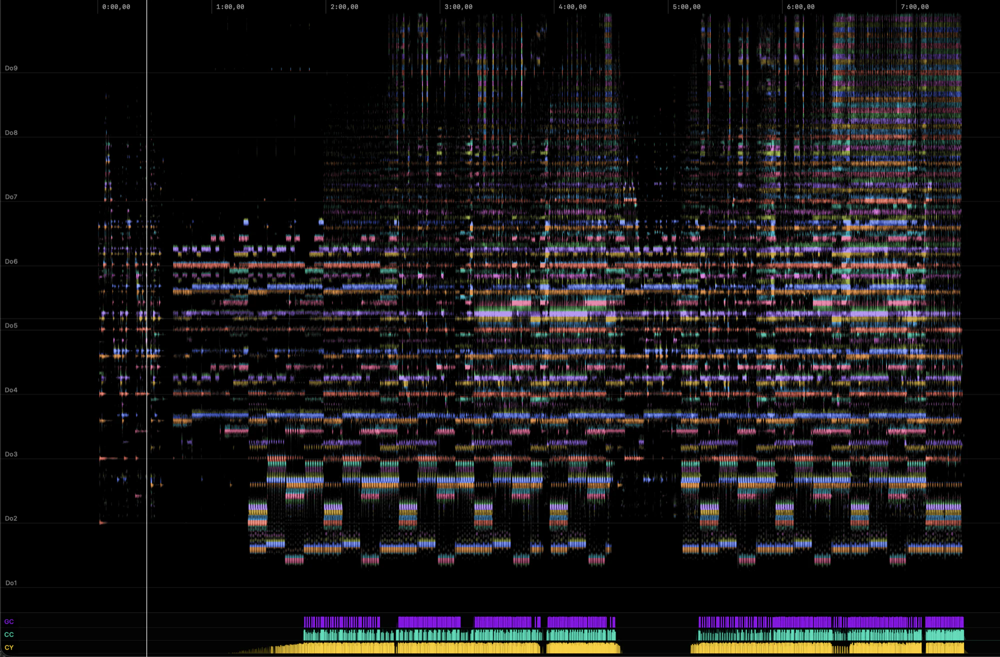
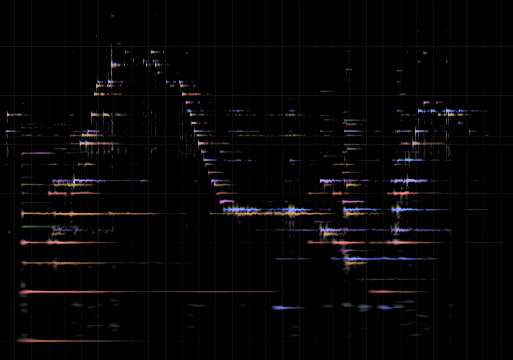
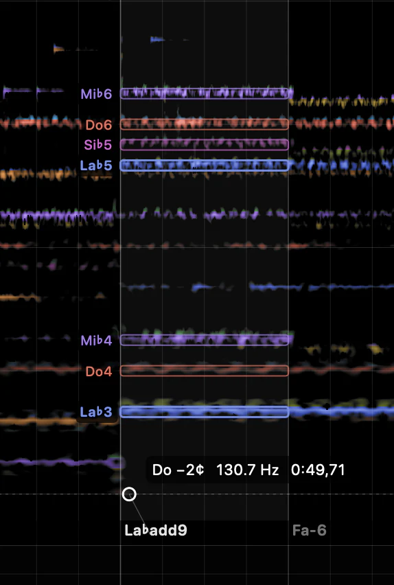
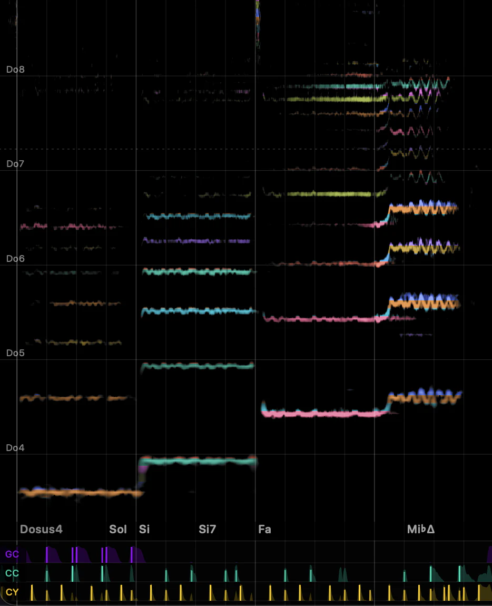
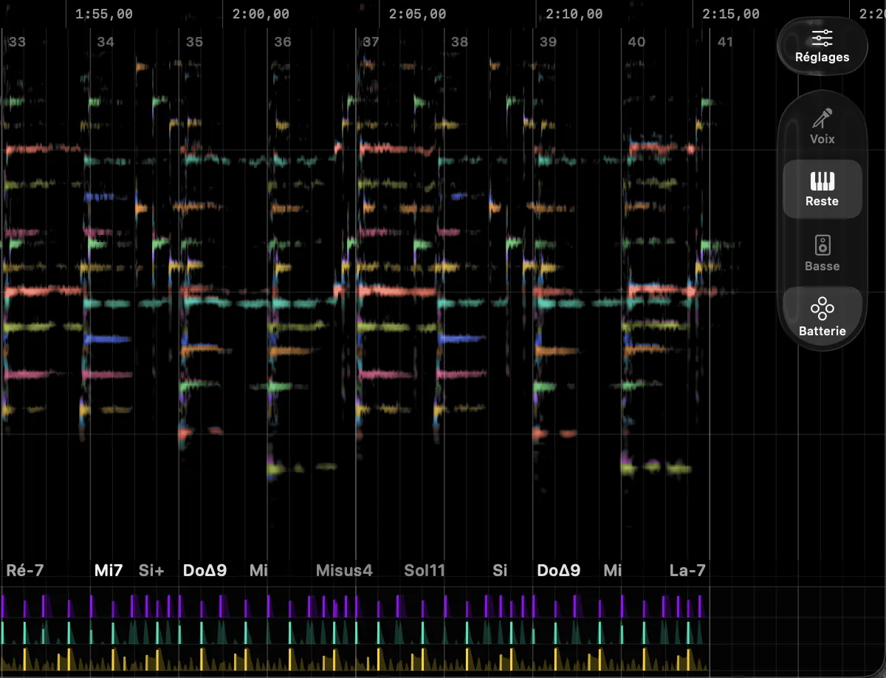
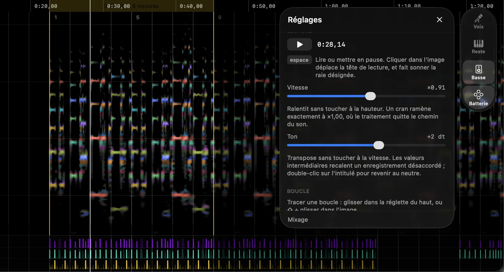

The whole track in one image

One colour per note

Automatic chord detection

Vocals, chords, drums

Stem separation: bass, drums, vocals, other

Loop and slow down a section

Install
The app is not signed with an Apple developer ID, so macOS quarantines it on download. Once it is in Applications:
xattr -dr com.apple.quarantine /Applications/Spectre.appThe installer is not signed by anyone, so SmartScreen shows a blue screen on first launch.
On Ubuntu and Debian the .deb installs for real. Elsewhere, take the AppImage. Needs a GPU that speaks OpenGL 3.3, and Wayland or X11.
sudo apt install ./Spectre-amd64.debOr build it yourself — Xcode is not required:
git clone https://github.com/gaspardlebasic/spectre.git
cd spectre && ./build.shOther platforms
Windows — shipped, for x64 and ARM64, with stem separation.
Linux — shipped, as an x86_64 AppImage, with stem separation.
What Spectre sends
When something breaks, Spectre sends the report on its own, so that it gets fixed. Never part of it: your file names, your folders, or what you listen to. Nothing else is measured. It says so once, at first launch.